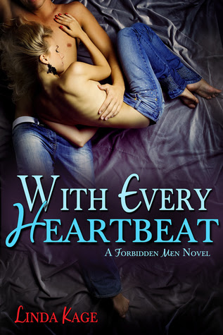

With Every Heartbeat
Solía pensar que todo era negro o blanco, verdad o mentira, fácil o difícil, que si tan sólo pudiera escapar de mi estricto,
autoritario y abusivo padre, mi vida sería perfecta. Pero desde que encontré una razón para arriesgarme a su ira e irme, para
ayudar a una amiga que me necesita, me he dado cuenta de que todo lo que yo creía que sabía no es así. Los amigos tienen su
propia agenda, la honestidad viene con una dosis de mentira, lo fácil ni siquiera existe, guardar secretos es una mierda,
y el amor... el amor es lo más doloroso de todo.
Tal vez si Quinn Hamilton no me hubiese pedido que faltara a clases y le ayudase a escoger un anillo de compromiso para mi
mejor amiga, no me habría enamorado de él tan profundamente en ese soleado martes por la tarde y no me sentiría tan indecisa.
Pero me enamoré, y no puedo volver atrás, sin importar cuánto lo intente. Por lo tanto, tengo que lidiar con el hecho de que
ni siquiera soy tan buena, ni honesta, ni considerada como siempre creí, y haga lo que haga ahora, alguien va a salir lastimado. Probablemente sea yo.